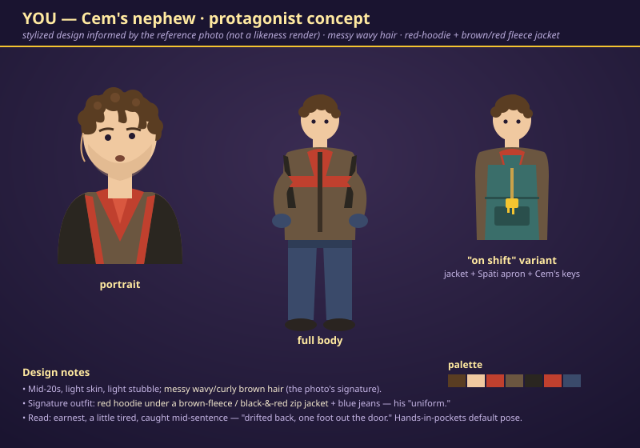
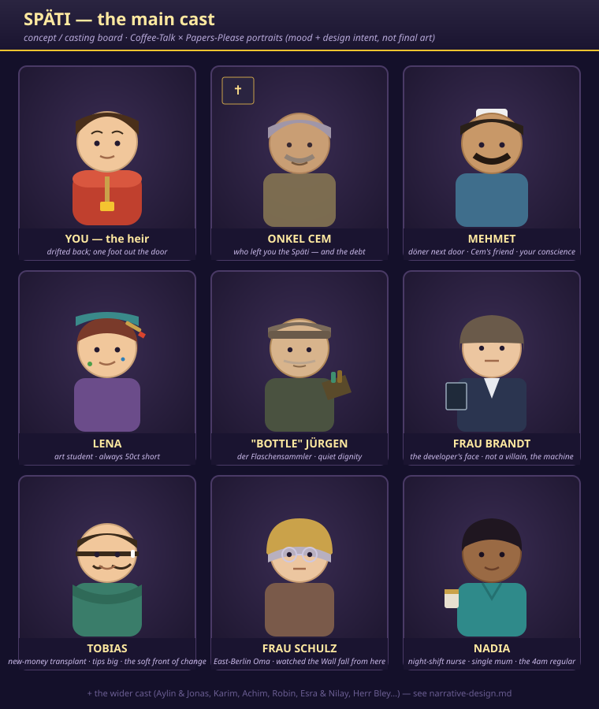
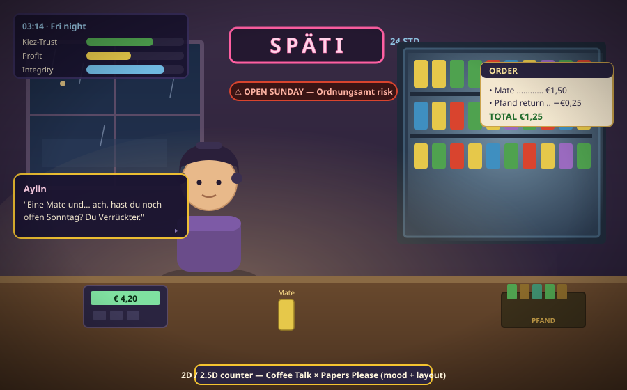

reference/.)

A character-concept sheet (portrait · full body · "on-shift" apron variant) designed from the user's reference photo: mid-20s, messy wavy brown hair, light stubble, the signature red-hoodie + brown/red fleece jacket and jeans — earnest, a little tired, "drifted back, one foot out the door." A stylized design, not a likeness render; final = a real artist working from the photo.

The people who carry the story: YOU (the heir), Onkel Cem, Mehmet, Lena, "Bottle" Jürgen, Frau Brandt, Tobias, Frau Schulz, Nadia — each a recurring, branching 7-step arc (the full cast + ending-tapestry is in narrative-design.md). Expressive portrait busts at the counter are the load-bearing art.

Side-on at the counter: a regular leans in with a dialogue panel; the fridge wall glows cyan, the neon hums, rain on the window, a warm pool of light against the cold Berlin night. The HUD — order ticket, till, Pfand crate, the Kiez-Trust / Profit / Integrity meters, and an "open Sunday — Ordnungsamt risk" chip — layers cleanly onto the counter framing.